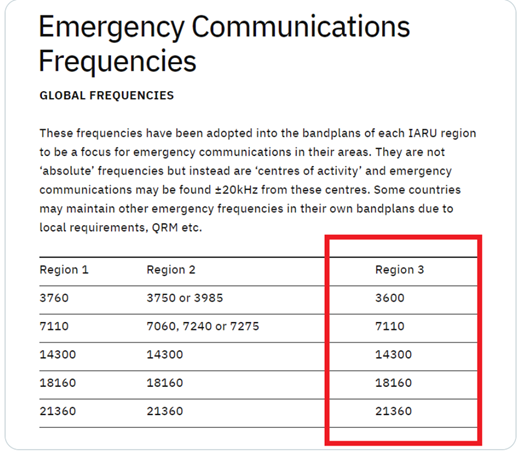

There is also information at NZHEARLD.CO.NZ. 73, Ross K6GFJ From: Chat <chat-bounces@ncdxc.org> On Behalf Of vladimir rytikov via Chat I was able to find this freq info:  I am checking these frequenties now. If somebody needs the top gear stations with 1kW+ power I can give hand for the emergency traffic. I started to look at Pacific area - it looks empty right now at the moment. -- vladimir On Sun, Jan 16, 2022 at 12:05 PM Jon Zweig via Chat <chat@ncdxc.org> wrote:
|